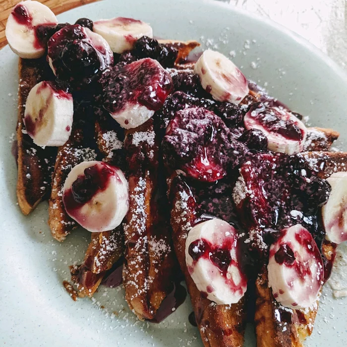

French Toast

Description
This French toast recipe is different because it uses flour. I have given it to some friends and they've all liked it better than the French toast they usually make!
prep:
10 mins
cook:
20 mins
total:
30 mins
Servings:
12
Yield:
12 slices
Ingredients
- ¼ cup all-purpose flour
- 1 cup milk
- 1 pinch salt
- 3 eggs
- ½ teaspoon ground cinnamon
- 1 teaspoon vanilla extract
- 1 tablespoon white sugar
- 12 thick slices bread
Steps
- Measure flour into a large mixing bowl. Slowly whisk in the milk. Whisk in the salt, eggs, cinnamon, vanilla extract and sugar until smooth.
- Heat a lightly oiled griddle or frying pan over medium heat.
- Soak bread slices in mixture until saturated. Cook bread on each side until golden brown. Serve hot.